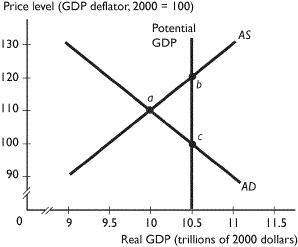
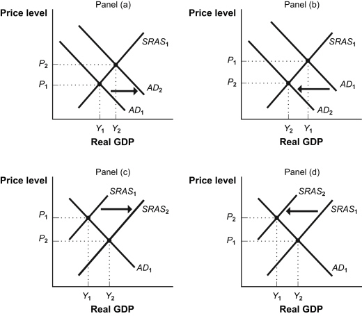
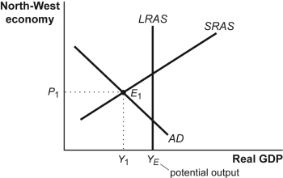
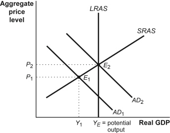

Multiple Choice
Identify the
choice that best completes the statement or answers the question.
|
|
|
1.
|
Constructing the CPI involves which of the following stages | i. | conducting the monthly price
survey. | | ii. | converting the CPI to an international index. | | iii. | selecting CPI market basket. | | |
a. | i only. | b. | ii only. | c. | iii
only. | d. | i and iii. | e. | i, ii, and iii. |
|
|
|
2.
|
Consumers in Infland consume only two goods, magazines and pizzas. If they spend
$50 on magazines and $90 on pizzas a month, how many magazines and pizzas are in their CPI market
basket if the price of a magazine is $5 and the price of a pizza is $9.
a. | 7 magazines and 5 pizzas | b. | 10 magazines and 5 pizzas | c. | 5 magazines and 7
pizzas | d. | 10 magazines and 10 pizzas | e. | It is impossible to determine the market basket
without information on the quantity of at least one of the two goods
consumed. |
|
|
|
|
|
|
3.
|
Consumers in a country buy only two goods, pens and CDs. The prices and
quantities purchased by urban households are in the table above. The reference base year is 2005. If
the current year is 2006, the cost of the CPI market basket in 2006 is
a. | $3,400. | b. | $3,588. | c. | $3,580. | d. | $3,508. | e. | $3,500. |
|
|
|
4.
|
The difference between nominal and real is
a. | nominal is measured in current dollars and real is measured in dollars of a given
year. | b. | real is measured in current dollars and nominal is measured in dollars of a given
year. | c. | nominal is a number stated in dollars and real is stated with an index
number. | d. | real is a number stated in dollars and nominal is stated with an index
number. | e. | both nominal and real are measured with index numbers, only the nominal index is
greater than 100 and the real index is less than 100. |
|
|
|
5.
|
Ms. Bankson has saved $100,000 for her retirement. She earned 6 percent interest
on that money during the year 2005. If the inflation rate was 4 percent in 2005, what was Ms.
Bankson's real interest rate?
a. | $6,000 | b. | 10 percent | c. | 2
percent | d. | 3 percent. | e. | 8 percent. |
|
|
|
6.
|
A surplus of labor is eliminated by ____ in the real wage rate and a shortage of
labor is eliminated by ____ in the real wage rate.
a. | an increase; an increase | b. | an increase; a decrease | c. | a decrease; an
increase | d. | a decrease; a decrease | e. | None of the above answers are correct because
shortages and surpluses are eliminated by changes in the demand for labor and the supply of labor,
not the wage rate. |
|
|
|
7.
|
During an inflation, a household with savings of $100,000
a. | gains because inflation increases the value of their savings. | b. | loses because the
inflation increases the after-tax real interest rate. | c. | gains because the inflation gives savers more
money and so more purchasing power. | d. | loses because inflation increases the real tax
on the interest paid. | e. | neither gains nor loses because inflation does
not affect savers. |
|
|
|
8.
|
 The change reflected in the above figure might be a
result of a. | a decrease in the money wage rate. | b. | a decrease in the real wage
rate. | c. | an increase in the money wage rate. | d. | an increase in the real wage
rate. | e. | a rise in the price level. |
|
|
|
9.
|
Last year the price level increased from 118 to 122. The increase in the price
level leads to a decrease in
a. | the buying power of money. | b. | the real interest rate. | c. | the money wage
rate. | d. | the price of domestic goods and services relative to foreign goods and
services. | e. | potential GDP. |
|
|
|
10.
|
Aggregate demand
a. | decreases if expected future income rises. | b. | increases if the
exchange rate rises. | c. | increases if government expenditures
decrease. | d. | increases if the expected inflation rate increases. | e. | increases if
aggregate supply increases. |
|
|
|
11.
|
An increase in the price level ____ the aggregate quantity supplied and ____ the
aggregate quantity demanded.
a. | increases; increases | b. | increases; decreases | c. | decreases;
increases | d. | decreases; decreases | e. | does not change;
decreases |
|
|
|
12.
|
The balanced budget multiplier applies when a $50 billion increase in government
expenditure is financed by a $50 billion ____ in tax revenue and the balanced budget multiplier shows
that in this case there is ____ effect on aggregate demand.
a. | decrease; no | b. | decrease; a positive | c. | increase;
no | d. | increase; a positive | e. | increase; a
negative |
|
|
|
13.
|
 An economy is at a short-run equilibrium as
illustrated in the above figure. An appropriate fiscal policy option to move the economy to
full employment is to increase a. | government expenditure and move the economy to a full-employment equilibrium at point
c. | b. | tax rates and move the economy to a full-employment equilibrium at point
c. | c. | government expenditure and move the economy to a full-employment equilibrium at point
b. | d. | tax rates and move the economy to a full-employment equilibrium at point
b. | e. | the quantity of money and move the economy to a full-employment equilibrium at point
b. |
|
|
|
14.
|
If the Fed decreases the interest rate, exports ____ and imports ____.
a. | increase; increase | b. | increase; decrease | c. | decrease;
increase | d. | decrease; decrease | e. | do not change because they are autonomous;
decrease |
|
|
|
15.
|
Which of the following changes aggregate supply and shifts the AS
curve? | i. | a change in the
price of a major resource | | ii. | increases in the amount of capital | | iii. | a change in the money income of consumer | | |
s a. | i only. | b. | ii only. | c. | iii
only. | d. | i and ii. | e. | i, ii, and iii. |
|
|
|
|
|
|
16.
|
In the figure above, the economy is at an equilibrium with real GDP of $10
trillion and a price level of 110. At this point there is
a. | an inflationary gap. | b. | a recessionary gap. | c. | price
stability. | d. | a full-employment equilibrium. | e. | a below full-employment
equilibrium. |
|
|
|
17.
|
In the figure above, the economy is at an equilibrium with real GDP of $10
trillion and a price level of 110. As the economy moves toward its ultimate equilibrium, the ____
curve will shift ____.
a. | aggregate supply; leftward | b. | aggregate supply; rightward | c. | aggregate demand;
rightward | d. | aggregate demand; leftward | e. | potential GDP;
rightward |
|
|
|
|
|
|
18.
|
In the figure above, the economy is at an equilibrium with real GDP of $10
trillion and a price level of 110. At this point there is
a. | an inflationary gap. | b. | a recessionary gap. | c. | price
stability. | d. | a full-employment equilibrium. | e. | an above full-employment
equilibrium. |
|
|
|
19.
|
Unemployment increases when
a. | an inflationary gap is created. | b. | potential GDP increases. | c. | the government
decreases its expenditures on goods and services. | d. | aggregate demand increases. | e. | aggregate supply
increases. |
|
|
|
Figure 19-1: Shifts of the AD–AS Curves

|
|
|
20.
|
Use the “Shifts of the AD–AS Curves” Figure
19-1. In the short run, a decrease in investment is illustrated by:
a. | Panel (A). | b. | Panel (B). | c. | Panel
(C). | d. | Panel (D). | e. | Panels (B) and
(D). |
|
|
|
21.
|
Stagflation may result from:
a. | an increase in the supply of money. | b. | a decrease in the supply of
money. | c. | an increase in the price of imported oil. | d. | a decrease in the
price of imported oil. | e. | an increase in personal income
taxes. |
|
|
|
Figure 20-2: North-West Government

|
|
|
22.
|
Use the “North-West Government” Figure 20-2. Using the
accompanying figure, which of the following would be the appropriate response of the North-West
government?
a. | Expand aggregate demand by increasing taxes to close the inflationary
gap. | b. | Reduce aggregate demand by cutting taxes to close the inflationary
gap. | c. | Expand aggregate demand by decreasing taxes to close the recessionary
gap. | d. | Reduce aggregate demand by increasing taxes to close the recessionary
gap. | e. | Expand aggregate demand by increasing taxes to close the recessionary
gap. |
|
|
|
23.
|
Expansionary fiscal policy:
a. | increases long-run aggregate supply. | b. | decreases long-run aggregate
supply. | c. | increases aggregate demand. | d. | decreases aggregate demand. | e. | increases short-run
aggregate supply. |
|
|
|
Figure 20-5: Fiscal Policy I

|
|
|
24.
|
Use the “Fiscal Policy I” Figure 20-5. Suppose that
this economy is in equilibrium at E1. If there is an increase in government
purchases, then:
a. | AD2 will shift to the left, causing an increase in the price level
and a decrease in real GDP. | b. | AD2 will shift to the left,
causing a decrease in the price level and a decrease in the real GDP. | c. | AD1 will shift to the right, causing an increase in the price level
and an increase in real GDP. | d. | AD1 will shift to the right,
causing a decrease in the price level and an increase in real GDP. | e. | AD1 will shift to the right, causing a increase in the price level
and a decrease in real GDP. |
|
|
|
25.
|
Use the “Fiscal Policy I” Figure 20-5. Suppose that this
economy is in equilibrium at E2. If there is a decrease in government purchases,
then:
a. | AD2 will shift to the left, causing an increase in the price level
and a decrease in real GDP. | b. | AD2 will shift to the left,
causing a decrease in the price level and a decrease in the real GDP. | c. | AD1 will shift to the right, causing an increase in the price level
and an increase in real GDP. | d. | AD1 will shift to the right,
causing a decrease in the price level and an increase in real GDP. | e. | AD2 will shift to the left, causing a decrease in the price level
and a increase in the real GDP. |
|